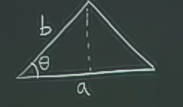
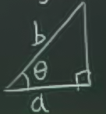

Ders 14
Bağımsız Olmayan Değişkenler (Non-Independent Variables)
Örnek
Fizikteki $f(P,V,T)$ formülü, ki bu değişkenler
$$ PV = nRT $$
şeklinde ilintili. Daha genel olarak bir $f(x,y,z)$ formülü var, ve değişkenler $x,y,z$ birbiriyle $g(x,y,z) = c$ üzerinden bağlantılı. Aslında bir önceki dersteki aynı durum, sadece bu sefer min, maks değil, kısmı türevlere neler olduğunu inceleyeceğiz.
Yine önceki dersteki gibi, belki $g$'yi cebirsel olarak değiştirip, $f$'e sokup değişken yoketmek mümkün değil. Eğer öyle yapabilsek, bir $z = z(x,y)$ olabilirdi, ve onun kısmi türevlerine bakabilirdik,
$$ \frac{\partial z}{\partial x}, \frac{\partial z}{\partial y}, .. $$
gibi. Peki ya $z$'yi bulamıyorsak? Belki üstteki kısmi türevleri $z$'yi bulmadan elde edebiliriz.
Örnek
$$ x^2 + yz + z^3 = 8 $$
$(2,3,1)$ noktasına bakalım (yerine koyunca hakikaten 8 çıktığını görüyoruz). Fakat bu değerlerde azıcık değişiklik yapınca, $z$ nasıl değişir? Bu soruyu nasıl cevaplarım?
Formülden $z$'yi çekip çıkarmak gerekir, küpsel (cubic) formüllerde bunu yapmanın bir yolu var, fakat çok karmaşık bir formül ortaya çıkartıyor. Aradığımız sonuca ulaşmanın daha kolay bir yolu var.
$g$'nin tam diferansiyeline, yani $dg$'ye bakalım (üstteki formülü $g$ kabul ediyoruz). Tam diferansiyel
$$ 2x dx + z dy + (y+3z^2) dz = 0$$
Sağ taraf sıfır çünkü üstteki $g$ bir sabite eşit, $g=8$, sabitin değişimi sıfır, yani $dg=0$.
Tam diferansiyele $(2,3,1)$ değerini verelim
$$ 4dx + dy + 6dz = 0 $$
Bu formül bize her değişkenin değişiminin diğeri ile nasıl bağlantılı olduğunu gösteriyor. Mesela $dx$ ve $dy$'yi biliyorsak, $dz$'yi, yani $z$'nin değişimini hesaplayabiliriz. Yani $z=z(x,y)$ üzerinden
$$ dz = -\frac{1}{6}(4dx + dy) $$
Bu formül bize kısmi türevleri de göstermiş oluyor aslında, çünkü tam diferansiyel formülünde kısmi türevler vardır, üstteki formülde $dx,dy$'nin yanında yer alan değerler onlardır. O zaman
$$ \frac{\partial z}{\partial x} = -\frac{4}{6} = -\frac{2}{3} $$
$$ \frac{\partial z}{\partial y} = -\frac{1}{6} $$
Bunu düşünmenin bir diğer yolu şu. $\partial z/\partial x$ $z$'nin $x$'e göre değişimi ise, $y$ sabit demektir, üstteki $dz$ formülünde $dy=0$ deriz, geri kalanlar
$$ dz = -\frac{2}{3}dx $$
ki bu formül $z$'nin $x$'teki değişime göre nasıl değiştiğini gösteriyor.
Genel olarak
$$ g(x,y,z) = c $$
ise, o zaman
$$ dg = g_x dx + g_y dy + g_z dz $$
formülü sıfıra eşitlenir, ve bir diferansiyel diğerinin formunda elde edilebilir.
$$ dz = -\frac{g_x}{g_z}dx -\frac{g_y}{g_z}dy $$
O zaman $\frac{\partial z}{\partial x}$'i görmek istiyorsak, $dx$'in katsayısına bakabiliriz, ya da $y=sabit$ yani $dy=0$ deriz, ve geri kalanlar
$$ dz = -\frac{g_x}{g_z}dx, \ \frac{\partial z}{\partial x} = -\frac{g_x}{g_z}dx $$
Daha fazla ilerlemeden, şimdiye kadar gördüğümüz notasyonun bazı problemlerini inceleyelim.
$$ f(x,y) = x+y $$
$$ \frac{\partial f}{\partial x} = 1$$
Değişken değişim (change of variables) yapalım
$$ x = u $$
$$ y = u+v $$
Pek çetrefil bir değişim değil bu. O zaman
$$ f = x + y = 2u + v $$
$$ \frac{\partial f}{\partial u} = 2$$
Bu nasıl oldu? $x=u$ dediğimize göre, $x,u$ birbiriyle eşitler, o zaman kısmi türevleri de aynı olmalıydı.
Bu uyuşmazlığın niye ortaya çıktığını anlamak için notasyonun ne demek istediğine yakından bakmamız lazım. $\partial f/\partial x$ ile $x$'i değiştiriyor, ama $y$'yi sabit tutuyoruz. $\partial f/\partial u$ ile $u$'yu değiştiriyor, ama $v$'yi sabit tutuyoruz.
Yani evet, $x$ ile $u$'yu değiştirmek aynı şey olabilir, ama $v$'yi sabit tutmak ile $y$'yi sabit tutmak aynı şey değildir. Çünkü mesela $y$'yi sabit tutarsam ve $u$'yu değiştirirsem, $v$ de değişmelidir (ki biz bunu istemiyoruz) $y = u+v$ ifadesindeki toplamının sabit kalması için. Ya da $v$ sabit ise ve $u$'yu değiştiriyorsam, $y$ değişecektir.
Yani hoş, güzel, kısmi türev notasyonumuz neyin değiştiğini açıkça göstermesine rağmen, neyin sabit tutulduğunu göstermediği için yanılgılara yol açabiliyor. Bunu aklımızda tutmamız lazım. Örnekteki kısmı türevler birbiriyle aynı değil çünkü
$\partial f/\partial x$, $u=x$'i değiştir, ve $y$'yi sabit tut
$\partial f/\partial u$, $u=x$'i değiştir, ve $v = y-x$'i sabit tut
anlamına geliyor.
Daha açık bir notasyon şöyle olabilir
$$ \bigg( \frac{\partial f}{\partial x} \bigg)_y = \textrm { y sabit} $$
$$ \bigg( \frac{\partial f}{\partial u} \bigg)_v = \textrm { v sabit} $$
Örneğe dönersek
$$ \underbrace{ \bigg( \frac{\partial f}{\partial x} \bigg)y }_{1} \ne \underbrace{ \bigg( \frac{\partial f}{\partial x} \bigg)v = \bigg( \frac{\partial f}{\partial u} \bigg)_v }_{2} $$
Örnek  $$ A = \frac{1}{2}ab \sin(\theta) $$
Alan, $a,b,\theta$'nin fonksiyonu.
Farz edin ki size $a,b,\theta$ arasında bir ilişki olduğunu söyledim.

Diyelim ki üçgen aslında bir dik üçgen, bunu cebirsel olarak söylemenin yolu da alttaki kısıtlama ifadesi
$$ a = b \cos(\theta) $$
İncelemek istediğimiz alanın $\theta$'ya olan bağlantısı, yani, mesela $A$'nin değişiminin $\theta$'nin değişimine oranı nedir? Bunu hesaplamanın 3 yöntemi olabilir
1) $a,b,\theta$'yi bağımsız kabul et, o zaman
$$ \frac{\partial A}{\partial \theta} = \bigg( \frac{\partial A}{\partial \theta} \bigg)_{a,b} $$
Tabii $a,b$ sabitken $\theta$ değişsin demek, üçgenin dikliğinin ihlali demektir, çünkü hem kenarlar sabit, hem açı değişsin diyoruz, ama o zaman dik açı değişmek zorundadır. Her neyse, kısmi türevleri hesaplayalım.
$$ \frac{\partial A}{\partial \theta} = \frac{1}{2}ab \cos\theta $$
Şimdiye kadar kısıtlama ifadelerimi kullanmadım.
2) $a$'yi sabit tutalım, $b$ değişebilsin, ki böylece dik açı yerinde kalabilsin.
$$ b = b(a,\theta) = \frac{a}{\cos(\theta)} $$
$$ \bigg( \frac{\partial A}{\partial \theta} \bigg)_{a} $$
3) $b$'yi sabit tutalım, $a = a(b,\theta)$ değişsin, ki böylece dik açı yerinde kalabilsin.
$$ \bigg( \frac{\partial A}{\partial \theta} \bigg)_{b} $$
Bunlardan bir tanesini hesaplayalım, mesela $\bigg( \frac{\partial A}{\partial \theta} \bigg)_{a} $.
Hesabı yapmanın üç değişik yolunu göreceğiz.
- Metot: $b$'yi yanlız bırak (cebirsel), ve diğer formüle sok
$$ a = b \cos \theta => b = \frac{a}{\cos\theta} = a \sec\theta$$
$$ A = \frac{1}{2} \ ab \sin\theta $$
$$ = \frac{1}{2} \frac{a^2 \sin \theta}{\cos \theta} $$
$$ = \frac{1}{2} a^2 \tan \theta $$
O zaman
$$ \bigg( \frac{\partial A}{\partial \theta} \bigg)_{a} = \frac{1}{2}a^2sec^2(\theta) $$
Bu arada $sec$, $1/\cos$ demektir, eğer ve onun türevini $1+tan^2$ olarak biliyorsanız, o da aynı kapıya çıkar.
Hoca bu metotu tavsiye etmiyor (onun için metot sayısına biraz espri yaparak 'sıfır' vermiş) çünkü her zaman yanlız bırakma, başka formüle sokma mümkün olmayabilir.
1'inci Metot: Diferansiyelleri Kullan
Yapılacaklar şunlar
-
$a$'yi sabit tut, $da = 0$
-
kısıtlama ifadesi $a = b \cos\theta$
Üstteki ifadenin diferansiyelini alalım
$$ da = \cos \theta db - b \sin\theta d\theta $$
Şimdi elimizde $da,db,d\theta$'yi ilişkilendiren bir ifade var. $a$'nin sabit olduğunu biliyoruz, o zaman $da=0$
$$ 0 = \cos \theta db - b \sin \theta d\theta $$
$db$'yi yanlız bırakabiliriz
$$ \cos\theta db = b \sin\theta d\theta $$
$$ db = b \sin\theta d\theta \ / \cos\theta $$
$$ db = b \tan\theta d\theta $$
Böylece $b$'nin $\theta$'ya göre değişim oranını bulduk. Bu ne ise yarar? Ana formülü hatırlayalım, ve onun da diferansiyelini alalım
$$ A = \frac{1}{2} \ ab \sin\theta $$
$$ dA = \frac{1}{2} \ b \sin\theta da + \frac{1}{2} \ a \sin\theta db + \frac{1}{2} \ ab \cos\theta \mathrm{d} \theta $$
$da = 0$ ise, ilk terim yokolur.
$$ dA = \frac{1}{2} \ a \sin(\theta) db + \frac{1}{2} \ ab \cos \theta \mathrm{d} \theta $$
Geri kalanlarda, $db$ var, ama biz $\theta$'ya göre değişimi istiyoruz, $db$'yi orada görmek istemiyoruz. O zaman elimizdeki $db$ formülünü buraya sokalım.
$$ dA =
\frac{1}{2} \ a \sin\theta \ ( \ b \tan(\theta) d\theta \ ) \ +
\frac{1}{2} \ ab \cos\theta \mathrm{d} \theta
$$
$$ dA =
\frac{1}{2} \ ab \ (\sin\theta \tan\theta + \cos\theta )d\theta
$$
Trigonometriden
$$ dA =
\frac{1}{2} \ ab \ (
\underbrace{\sin(\theta) \tan(\theta) + \cos \theta}_{sec(\theta)}
)d\theta
$$
Sonucu bulduk
$$ \bigg( \frac{\partial A}{\partial \theta} \bigg)_{a} = \frac{1}{2} \ ab \ sec(\theta) $$
Özetlemek gerekirse, şunları yaptık
-
$A$'yi $da,db,d\theta$ ile ifade et
-
$a=sabit, \mathrm{d} a=0$ demektir.
-
Kısıtlama ifadesinin diferansiyelini al, $db$'yi yanlız bırak.
-
$dA$'ya sok
-
Metot: Zincirleme Kanununu Kullan
$$ \bigg( \frac{\partial A}{\partial \theta} \bigg)_{a} = A\theta \bigg( \frac{\partial \theta}{\partial \theta} \bigg)_{a} + A_a \bigg( \frac{\partial a}{\partial \theta} \bigg){a} + A_b \bigg( \frac{\partial b}{\partial \theta} \bigg)_{a} $$
$$ = A_\theta \cancelto{1}{\bigg( \frac{\partial \theta}{\partial \theta} \bigg)_{a}} + A_a \cancelto{0}{\bigg( \frac{\partial a}{\partial \theta} \bigg){a}} + A_b \bigg( \frac{\partial b}{\partial \theta} \bigg)_{a} $$
Sıfır olan kısmı türev öyle oldu çünkü $a$ sabit dedik. Son terimdeki kısmı türev için kısıtlama ifadesini kullanacağız.
Soru 2J-1 a)
$$ w = x^2+y^2+z^2, \ z = x^2+y^2 $$
için
$$ \bigg( \frac{\partial w}{\partial y} \bigg)_z $$
hesabını yapın, ve direk yerine geçirme (direct subsitution) tekniğini kullanın.
Cevap
Üstteki notasyon tüm sabit tutulan değişkenleri hangileriyse göstermek zorunda, burada sadece $z$'nin sabit tutulduğu söyleniyor, değişen $y$. O zaman bağımlı değişken $x$ olmalıdır. Bu değişkeni yokedelim,
$$ z = x^2+y^2 $$
$$ x^2 = z - y^2 $$
Yerine koyalım
$$ w = (z-y^2)+y^2+z^2 $$
$$ = z + z^2 $$
O zaman kısmi türev
$$ \bigg( \frac{\partial w}{\partial y} \bigg)_z = 0$$
olacaktır.
Soru 2J-2 (b) (i)
Üstteki $w$ için,
$$ \bigg( \frac{\partial w}{\partial z} \bigg)_y $$
hesabını yap ve zincirleme kanunu kullan.
Cevap
$$ \bigg( \frac{\partial w}{\partial z} \bigg)_y = 2x \ \bigg( \frac{\partial w}{\partial z} \bigg)_y + 2z $$
Diğer yandan
$$ z = x^2 + y^2 $$
var, bunun üzerinde de aynı türevi alalım. Tekrar düzenleyip istediğimiz değişkeni belli bir tarafa almaya gerek yok, çünkü yerine geçirme tekniği kullanmıyoruz. İki tarafın kısmi türevini alınca
$$ 1 = 2x \bigg( \frac{\partial w}{\partial z} \bigg)_y $$
$$ \frac{ 1}{2x} = \bigg( \frac{\partial w}{\partial z} \bigg)_y $$
Ana formülün kısmı türevinde üstteki formülü yerine koyalım
$$ \bigg( \frac{\partial w}{\partial z} \bigg)_y = 2x \frac{1}{2x} + 2z $$
$$ = 1 + 2z $$
Soru 2J-4 b)
$$ w = x^3y - z^2t, \quad xy = zt$$
için
$$ \bigg( \frac{\partial w}{\partial t} \bigg)_{x,z} $$
hesabını yap, tam diferansiyel tekniğini kullan.
Cevap
Çözüm için her iki denklemin tam diferansiyelini alacağız. Bağımlı, bağımsız bilgisi ise "diferansiyel yerine geçirme" uyguladığımızda ise yarayacak, yani daha önce düz değişken üzeinden yaptığımız değişimi, şimdi diferansiyeller üzerinden yapacağız. Tam diferansiyeli mekanik bir şekilde önce yazalım
$$ dw = w_x dx + w_y dy + w_z dz + w_t td $$
Gerekli kısmi türevleri alalım
$$ = 3x^2y dx + x^3dy - 2zt dz + -z^2 dt$$
Aynısı ikinci denklem için
$$ y dx + x dy = t dz + z dt $$
Bizden istenene göre $t,x,z$'nin bağımsız, geri kalan $y$'nin bağımlı olduğunu anlıyoruz. O zaman üstteki formülde $dy$'yi yanlız bırakırsak ve ana tam diferansiyel içinde yerine koyarsak, istediğimiz sonuca erişeceğiz.
$$ y dx = t dz + z dt = x dy$$
Yerine koyalım, ve gruplayalım
$$ = 3x^2ydx + x^2(tdz + zdt - ydx) - 2ztdz - z^2dt $$
$$ = (3x^2y - x^2y)dx + (x^2t-2zt)dz + (x^2z-z^2)dt $$
$$ = (2x^2y) dx + (x^2t-2zt) dz + (x^2z-z^2)dt $$
Aradığımız kısmı türev $t$'ye göre, o zaman üstteki tam diferansiyel açılımında $dt$'nin katsayısına bakacağız. Orada $x^2x-z^2$ yazıyor, demek ki aradığımız sonuç bu.
$$ \bigg( \frac{\partial w}{\partial t} \bigg)_{x,z} = x^2x-z^2 $$
Soru 2K-3 a)
Laplace Denklemi iki boyutta şöyle
$$ \frac{\partial^2 w}{\partial x^2} + \frac{\partial^2 w}{\partial y^2} = 0 $$
Diyelim ki şu formda olmak üzere
$$ w = ax^2 + bxy + cy^2 $$
tüm çözümleri istiyoruz. Bu çözümü bulduktan sonra çözümün $c_1f_1(x,y) + c_2f_2(x,y)$ olarak temsil edilebilecegini gösterin, ki $c_1,c_2$ rasgele birer sabit ve $f_1,f_2$ özel birer polinom. Yani çözüm $f_1,f_2$'nin lineer bir kombinasyonu olabilmeli.
Çözüm
$$ w_{xx} = \frac{\partial }{\partial x} (2ax + 4) = 2a $$
$$ w_{yy} = \frac{\partial }{\partial y} (2cy) = 2c $$
Eğer Laplace'a göre $w_{xx} + w_{yy} = 0$ olması gerekiyorsa,
$$ 2a + 2c = 0 $$
$$ a = -c $$
olmalı. Şimdi ana formülde $a$ yerine $-c$ koyalım.
$$ ax^2 + bxy -ay^2 $$
$$ = a(x^2-y^2) + bxy $$
Üstteki formül iki polinomun lineer kombinasyonu formatına girdi bile. İki rasgele sabiti $a,b$ olarak görebiliriz, ve iki polinom
$$ f_1 = x^2-y^2 $$
$$ f_2 = xy $$
Soru 2K-4
Tek boyutlu dalga denklemi
$$ \frac{\partial ^2w}{\partial x^2} = \frac{ 1}{c^2} \frac{\partial ^2w}{\partial t^2} $$
için $w = f(x+ct) + g(x-ct)$ fonksiyonun bir çözüm olduğunu gösterin.
Cevap
Ders 11'de gösterildiği gibi $f(u)$ gibi bir fonksiyonun türevini alırken Zincirleme Kanunu gerekiyor, bu kanunu her iki terim üzerinde ayrı ayrı uyguluyoruz,
$$ \frac{\partial w}{\partial x} = \frac{\partial f}{\partial u} \frac{\partial u}{\partial x} + \frac{\partial g}{\partial u} \frac{\partial u}{\partial x} $$
$f$, $u$ bağlamında tek değişkene bağlıymış gibi görülebilir, o zaman $\partial$ yerine $d$ kullanılabilir, ya da $'$.
$$ \frac{\partial w}{\partial x} = \frac{df}{du} \frac{\partial u}{\partial x} + \frac{dg}{du} \frac{du}{\partial x} $$
İşlemi yapalım
$$ w_x = f' + g' $$
Üstte hiçbir $x,t$ ifadesi kalmadı, çünkü $x+ct$ ya da $x-ct$'nin $x$'e göre göre türevi 1 sadece. Bir daha türev alırsak
$$ w_{xx} = f" + g" $$
$$ w_t = f'c - g'c $$
Üstteki türevde $u$ üzerinden tekrar Zincirleme Kanunu uygulandığına dikkat. Çünkü $f'$ türev olmasına rağmen hala $u$'nun bir fonksiyonu hala.
$$ w_{tt} = f'c^2 + g'c^2 $$
Yerine koyarsak dalga denklemindeki eşitliğin doğru olduğunu görürüz.
İlginç olan $f,g$'nin gösterilen $u$'ları içerdiği takdirde, herhangi bir fonksiyon olabileceğidir. Daha fazla detay için PDE Ders 1 notlarına bakılabilir.
Yukarı